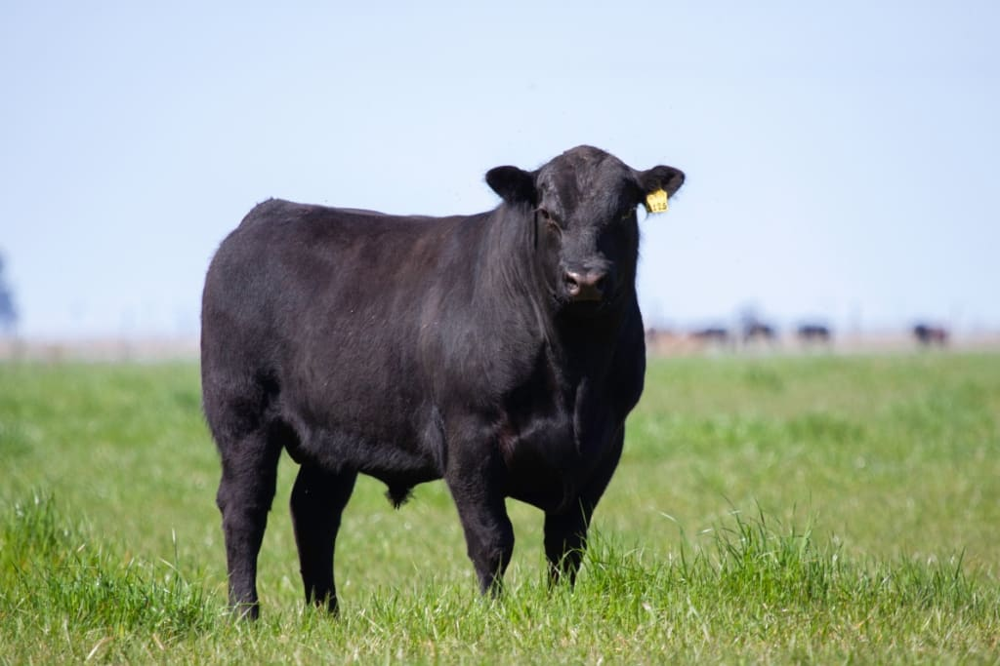

Angus
A espécie Angus, originária da Escócia, é amplamente criada no Brasil. Os bois Angus têm uma aparência
imponente, com porte médio a grande. São reconhecidos por sua pelagem predominantemente preta, com alguns
indivíduos apresentando pelagem vermelha, chamados Angus Vermelho. A raça Angus é especialmente valorizada
por sua carne de excelente qualidade, com bom marmoreio e sabor marcante, o que a torna muito popular na
indústria de alimentos.
Características:
Originária da Escócia.
Porte médio a grande.
Pelagem predominantemente preta, com exemplares Angus Vermelho.
Carne de excelente qualidade com bom marmoreio e sabor marcante.
